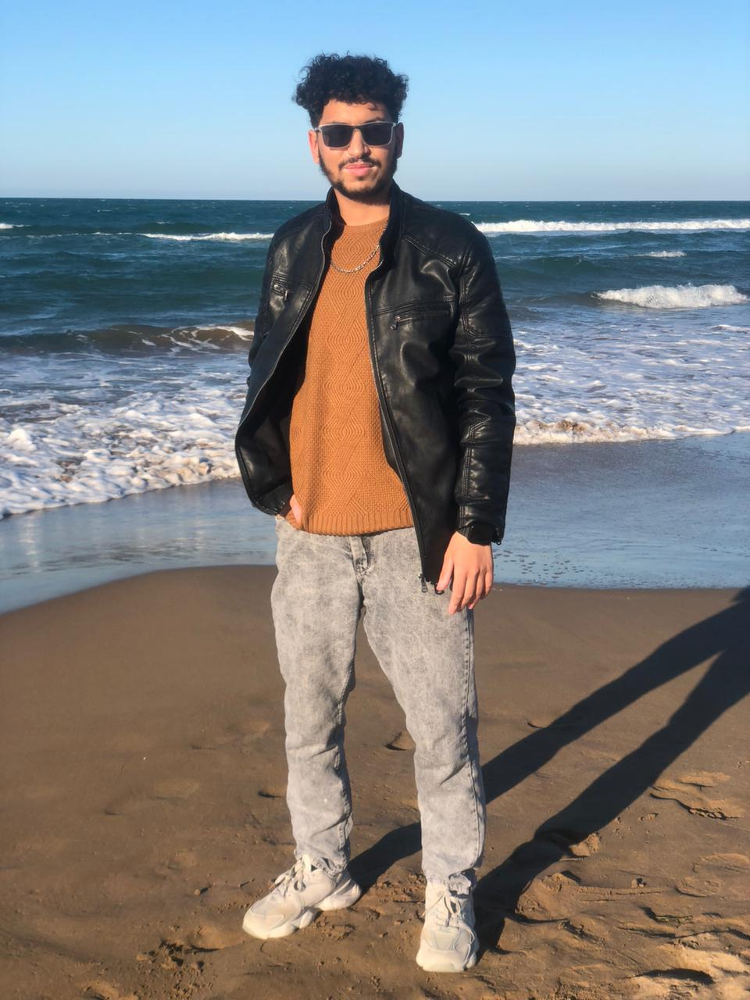

Je m’appelle Mohammed Oumouss, né le 13 juillet 2004 à Oujda, où je réside actuellement. Âgé de 21 ans, je poursuis mes études à la Faculté des Sciences d’Oujda (FSO) dans la filière Informatique Appliquée. J’ai obtenu mon baccalauréat en 2024, et depuis, je m’efforce de développer mes compétences académiques et techniques dans le domaine de l’informatique. Je suis particulièrement motivé par les nouvelles technologies et l’apprentissage continu, ce qui me pousse à approfondir mes connaissances aussi bien à l’université qu’en autodidacte. En dehors de mes études, je suis passionné par la lecture, notamment les livres et les romans, qui occupent une place importante dans ma vie. Cette passion m’aide à enrichir mon vocabulaire, à améliorer ma capacité de réflexion et à élargir ma vision du monde. Originaire d’Agadir, je suis fortement attaché à mes racines tout en étant pleinement intégré dans la ville d’Oujda où je vis et étudie. Par ailleurs, j’ai acquis diverses expériences professionnelles dans plusieurs domaines, notamment le commerce, le travail dans les cafés, ainsi que la peinture. Ces expériences m’ont permis de développer des qualités essentielles telles que le sens des responsabilités, l’adaptabilité, le travail en équipe et la rigueur. Ambitieux et déterminé, mon objectif est de réussir mon parcours académique, d’intégrer le monde professionnel dans le domaine de l’informatique et de construire une vie stable et équilibrée, tant sur le plan professionnel que personnel.